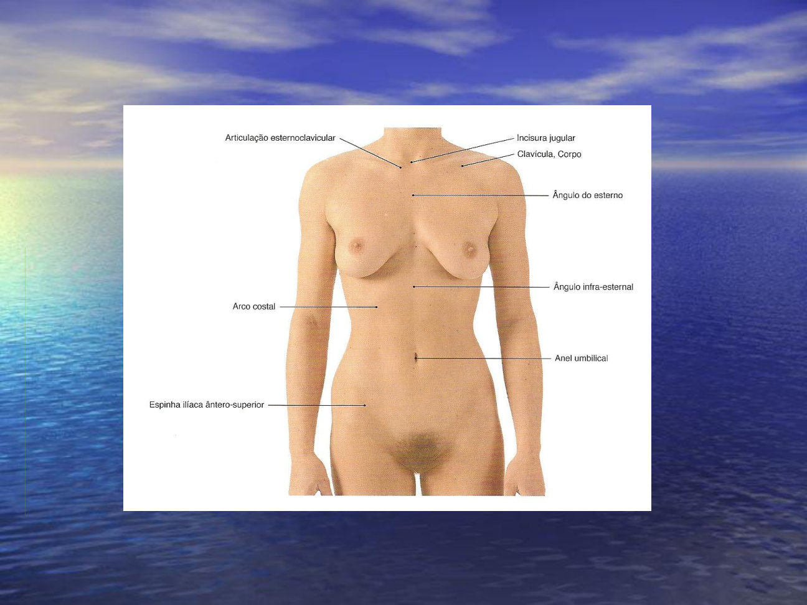
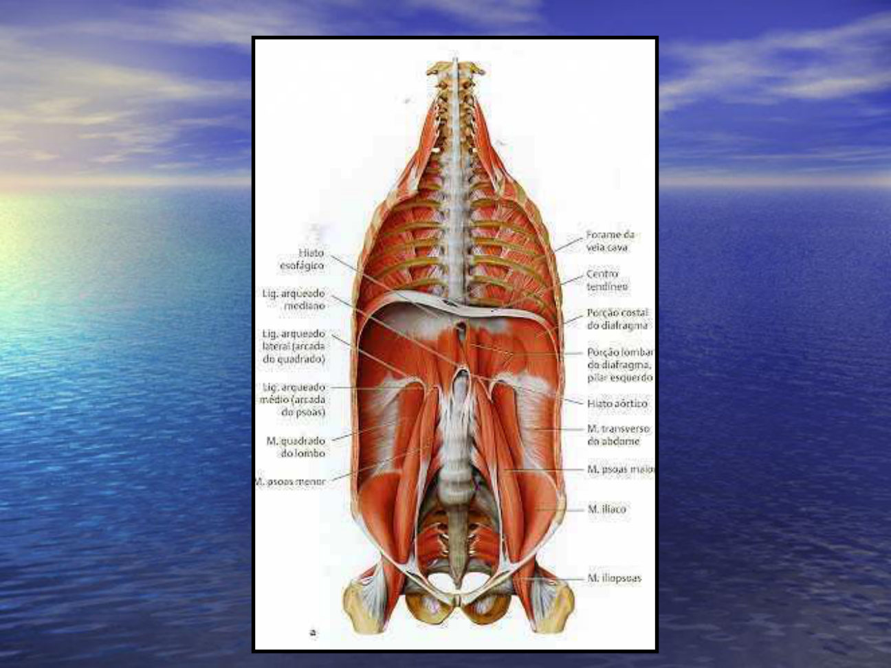
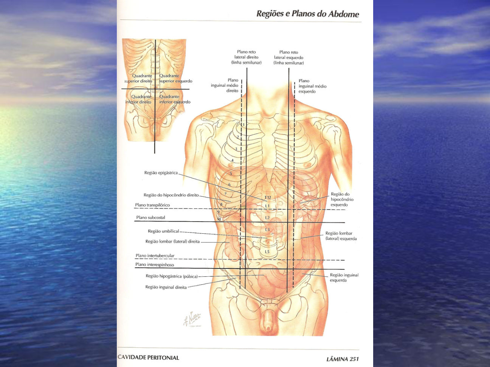
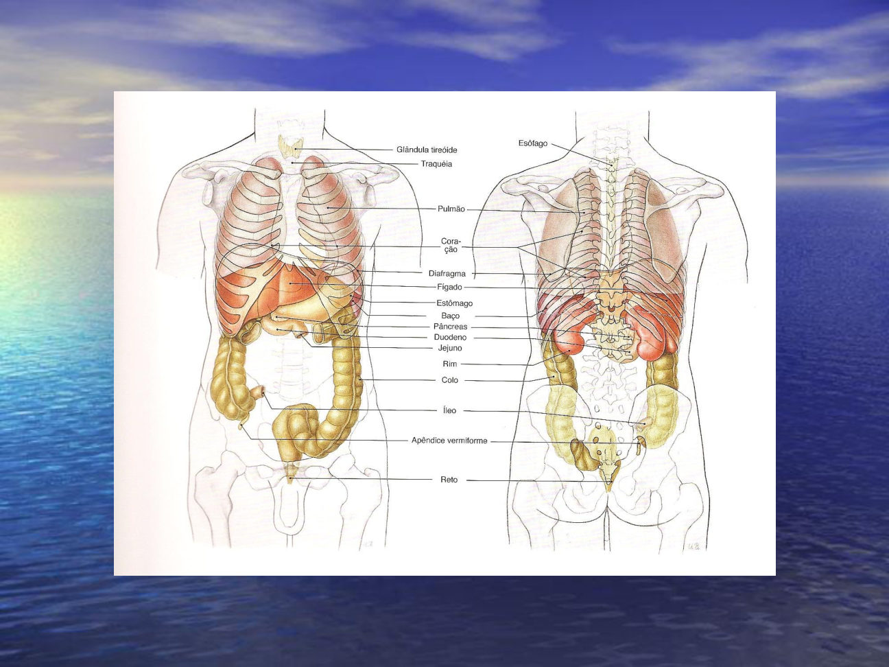
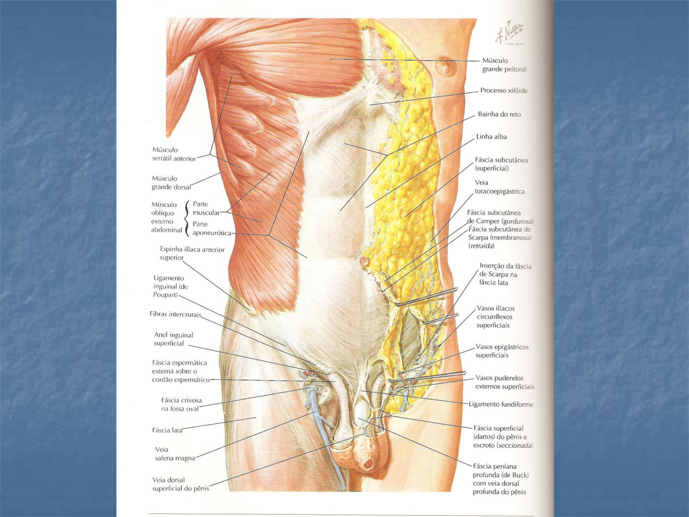
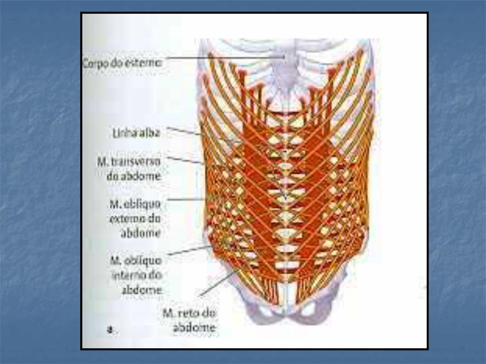
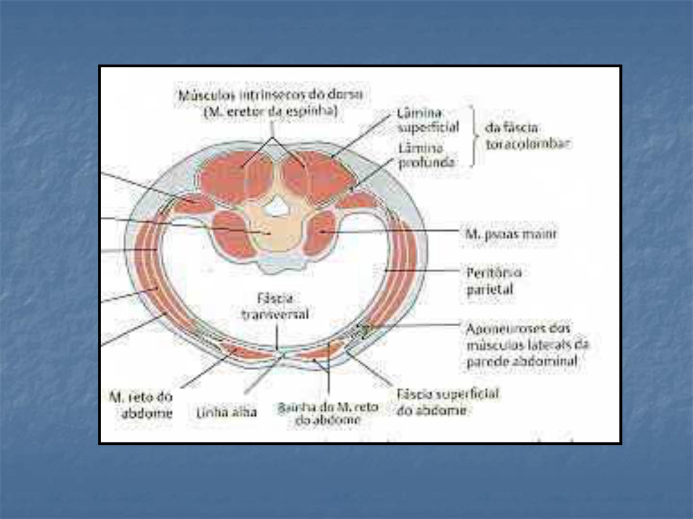
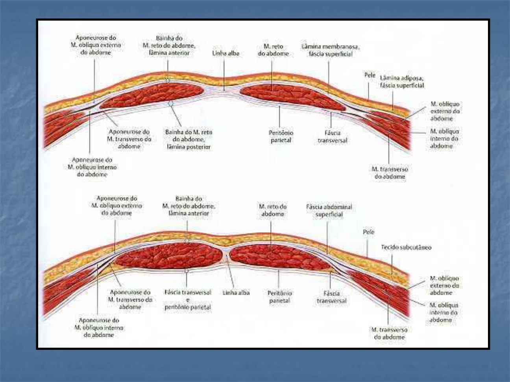
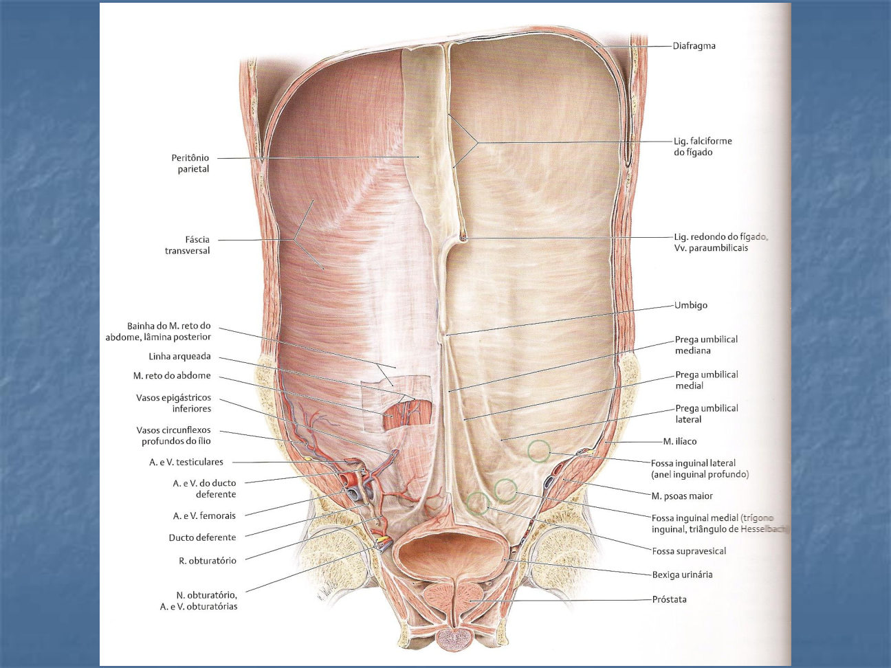
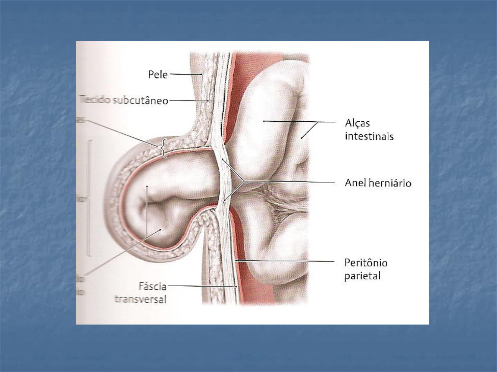

Córtex Estudos · 4º Semestre · Anatomia Topográfica · Aulas 05–06
Parede Abdominal e Hérnias
O mapa de superfície (zonas, regiões e o que mora embaixo de cada uma), a estratigrafia camada por camada, os três músculos largos e o reto, a bainha do reto com a linha arqueada, os vasos e nervos da parede, a vista por dentro (pregas e fossas — a gênese das hérnias) e a aula inteira de hérnias: classificação, incidências, exame físico e as que não são hérnias. Tudo explicado do zero, com as pontes clínicas que o professor fez.
1 · O mapa de superfície da parede anterolateral
- A parede anterolateral do abdome separa-se do dorso pela LINHA AXILAR MÉDIA prolongada para baixo. Relembrando as linhas: axilar anterior = borda do peitoral maior · axilar posterior = borda do latíssimo do dorso · axilar média = a transição entre as duas.
- Fossa epigástrica: a pequena depressão na parte mais alta da parede, onde está o processo xifoide. (Em quem tem o xifoide anteriorizado — "peito de pombo" — a fossa fica elevada, sem depressão.)
- Cicatriz umbilical: formada quando o cordão umbilical cai e cicatriza — o "buraco" do umbigo.
- Região infraumbilical: elevação abaixo do umbigo, onde o acúmulo de gordura é maior (e mais difícil de queimar — os "pneuzinhos", que aumentam com a idade).
- Linha PARA-RETAL: a depressão longitudinal ao lado do músculo reto do abdome — quanto mais definido o reto, mais visível. 🎯 Não pode chamar de linha semilunar: a semilunar é do TRANSVERSO (você vai ver no tópico 10).
- Depressões transversas sobre o reto: correspondem às INTERSEÇÕES TENDÍNEAS se inserindo na linha alba. Tendão (tecido fibroso) não se projeta; músculo sim — por isso o "tanquinho" desenha essas linhas.
- Linha alba: do processo xifoide à sínfise púbica, formada pela confluência das TRÊS aponeuroses (oblíquo externo + oblíquo interno + transverso).

2 · Cavidade ≠ parede: o diafragma é mais alto do que parece
- A cavidade abdominal penetra na caixa torácica: anteriormente, o diafragma chega à altura da 6ª costela à direita (à esquerda, um pouco mais baixo). Posteriormente, a inserção é mais baixa — mas ainda dentro do gradeado costal.
- Regra: diafragma ALTO na frente, BAIXO atrás — e mais alto à direita (fígado embaixo).
🩺 Por que isso importa: a drenagem de tórax
Se você drenar um tórax muito anterior e baixo (por exemplo no 7º espaço intercostal anterior), entra na cavidade ABDOMINAL — fura peritônio, pode furar víscera. Por isso a drenagem é feita classicamente no 5º espaço intercostal, na LINHA AXILAR MÉDIA, que já está acima do diafragma — e quanto mais posterior o trajeto, mais baixo está o diafragma e menor o risco de invadir o abdome.
3 · Parede posterior: psoas, quadrado do lombo e a pegadinha dos livros
- A parede posterior do abdome é formada por: PSOAS MAIOR e PSOAS MENOR (de cada lado), QUADRADO DO LOMBO (de cada lado), podendo-se incluir o ILÍACO — e, no centro, a parte óssea: as vértebras lombares.
🎯 "O livro que fala eretor está ERRADO"
O espaço entre o quadrado do lombo, o oblíquo interno e a 12ª costela é o trígono lombar SUPERIOR — e quem faz a delimitação é o QUADRADO DO LOMBO, não o eretor da espinha. O professor foi enfático: "o eretor está na FRENTE; quem delimita é o quadrado do lombo. Tem livro errado — e até artigo de revista top é retirado por erro ou fraude. Tomem cuidado com o que está escrito." Esse trígono volta no tópico 18 (hérnias lombares).

4 · Pilares do diafragma e os três ligamentos arqueados
Os três ligamentos arqueados (fixações do diafragma)
- 1Ligamento arqueado MEDIANO — entre o pilar direito e o pilar esquerdo do diafragma. 🎯 Quando é mais baixo, pode COMPRIMIR O TRONCO CELÍACO, que sai da aorta logo ali (síndrome do ligamento arqueado mediano).
- 2Ligamento arqueado MEDIAL — sobre o PSOAS MAIOR.
- 3Ligamento arqueado LATERAL — sobre o QUADRADO DO LOMBO.
- Guarde o trio na ordem: mediano (entre os pilares) · medial (psoas) · lateral (quadrado do lombo).
5 · O assoalho: diafragma pélvico (e o que é prolapso)
- O limite inferior da cavidade é o DIAFRAGMA PÉLVICO — a musculatura que fecha a pelve por baixo. Sem ela, as vísceras "caíam".
- Formação: LEVANTADOR DO ÂNUS, com suas três partes — PUBORRETAL, PUBOCOCCÍGEO e ILIOCOCCÍGEO — + o músculo COCCÍGEO atrás (junto ao sacro). 🎯 Só esses; bulboesponjoso e afins são do períneo, não do diafragma pélvico.
- Quando o diafragma pélvico falha e desce bexiga, útero ou reto, isso se chama PROLAPSO — que não é hérnia (o professor volta nisso na aula de hérnias e numa aula própria de estática pélvica).
6 · Quadrantes, zonas e as NOVE regiões — e o que mora em cada uma
- QUADRANTES (4): uma linha vertical + uma horizontal pela cicatriz umbilical → superior direito, superior esquerdo, inferior direito, inferior esquerdo.
- ZONAS (3 faixas transversas): a linha do processo xifoide e a linha que passa na ponta da 10ª COSTELA delimitam a zona EPIGÁSTRICA; da 10ª costela até a linha das espinhas ilíacas ântero-superiores, a zona MESOGÁSTRICA; daí até as pregas inguinais, a zona HIPOGÁSTRICA. (Lembre: 11ª e 12ª costelas são posteriores — quem "chega na frente" é a 10ª.)
- REGIÕES (9): acrescente duas linhas longitudinais — hemiclaviculares (ou pelo meio do ligamento inguinal) — e cada zona vira três regiões:
| Zona | Direita | Centro | Esquerda |
|---|---|---|---|
| Epigástrica | Hipocôndrio direito | Epigástrio | Hipocôndrio esquerdo |
| Mesogástrica | Flanco direito | Umbilical (mesogástrio) | Flanco esquerdo |
| Hipogástrica | Região inguinal direita | Hipogástrio (púbica/suprapúbica/infraumbilical) | Região inguinal esquerda |
🎯 Por que "hipocôndrio"?
"Hipo" = abaixo; "côndrio" = cartilagem costal — a região abaixo das costelas. E a ponte que o professor fez: o hipocondríaco toma remédio demais, e a maioria dos remédios é metabolizada no FÍGADO — que mora... no hipocôndrio direito.
- O que mora onde (projeção das vísceras): hipocôndrio D — fígado, vesícula biliar, flexura cólica direita · hipocôndrio E — baço, às vezes estômago e flexura cólica esquerda · epigástrio/mesogástrio — estômago, delgado, pâncreas, aorta, cava, cólon transverso · flanco D — cólon ascendente · flanco E — cólon descendente · fossa ilíaca D — apêndice (se não houver posição variável) · fossa ilíaca E — sigmoide · hipogástrio — bexiga, reto, útero, tubas, ovários, ureteres.
🩺 "O abdome é uma caixinha de surpresas"
Dor no baixo ventre (hipogástrio) na mulher pode ser cistite, infecção urinária, inflamação uterina, endometriose, ovário, reto... Por isso: na anamnese e no exame físico, divida a parede em NOVE regiões e palpe as nove — "dor à palpação do flanco direito" é muito mais específico que "dor no quadrante superior".
⚠️ Fossa ilíaca ≠ região inguinal
FOSSA é cavidade — "fossa ilíaca direita" é o que você palpa em profundidade. REGIÃO INGUINAL é parede. Então: apendicite dói na fossa ilíaca direita (profundidade); hérnia protrui na região inguinal (parede). Não misture os termos.


7 · Estratigrafia: Camper, fáscia superficial e Scarpa (igual à mama)
Da pele ao peritônio
- 1PELE
- 2Tela subcutânea — gordura AREOLAR (amarela) = fáscia de CAMPER — gorduras "redondinhas" (aréolas); é a que some mais rápido no emagrecimento.
- 3FÁSCIA SUPERFICIAL — a lâmina fina entre as duas gorduras.
- 4Gordura LAMELAR (branca) = fáscia de SCARPA — mais profunda e mais difícil de queimar. "Scarpa com S, igual da mama."
- 5Plano musculoaponeurótico — oblíquo externo → oblíquo interno → transverso → reto (tópicos 8–11).
- 6FÁSCIA TRANSVERSAL — o revestimento interno de toda a cavidade (como a fáscia endotorácica no tórax).
- 7PERITÔNIO parietal
- 🎯 O trio gorduroso é o mesmo da mama: areolar (Camper) + fáscia superficial + lamelar (Scarpa) — e desce também para a raiz da coxa.
- Curiosidade da aula: a gordura MARROM é a embrionária — rica em células jovens e com atividade metabólica/endócrina.

8 · Oblíquo externo: anel inguinal superficial e ligamento inguinal
- OBLÍQUO EXTERNO: o mais superficial dos largos. Origem lá em cima, desde a 5ª costela (e do dorso), parte carnosa seguida de aponeurose — todas as fibras confluem para a linha alba.
- Na aponeurose dele há um orifício: o ANEL INGUINAL SUPERFICIAL — por onde passam, vindo da cavidade: no homem o FUNÍCULO ESPERMÁTICO, na mulher o LIGAMENTO REDONDO DO ÚTERO (que vai se prender nos lábios do pudendo) — e, junto deles, o nervo ILIOINGUINAL.
- LIGAMENTO INGUINAL: é a REFLEXÃO da aponeurose do oblíquo externo, da espinha ilíaca ântero-superior ao tubérculo púbico — separa a parede abdominal da raiz da coxa (na superfície, a prega inguinal). Sinônimos que o professor citou: ligamento de FALÓPIO (italianos), de POUPART (franceses/ingleses), ARCADA INGUINAL/CRURAL.
- ⚠️ Não confunda: o anel é o furo na aponeurose; o ligamento passa lateral/abaixo dele e será a parede inferior do canal inguinal (aula 07).
9 · Oblíquo interno ("mão no peito") e o cremaster
- OBLÍQUO INTERNO: origem no dorso e na linha intermédia da crista ilíaca; as fibras SOBEM em direção súpero-medial — o macete do professor: "mão no peito" é o sentido das fibras dele.
- 🎯 Do oblíquo interno descem fibras para a bolsa escrotal formando o músculo CREMASTER — o elevador do testículo.
10 · Transverso: linha semilunar de Spiegel e anel inguinal profundo
- TRANSVERSO DO ABDOME: o mais profundo dos largos — origem no dorso, nas últimas cartilagens costais e na linha interna da crista ilíaca; fibras horizontais confluindo para a linha alba.
- 🎯 LINHA SEMILUNAR (de SPIEGEL): a transição entre a parte CARNOSA e a parte APONEURÓTICA do TRANSVERSO — em forma de meia-lua, de cima a baixo. É outra coisa que a linha para-retal da superfície (aquela é só a depressão ao lado do reto).
- No plano profundo existe uma fenda — o ANEL INGUINAL PROFUNDO — por onde funículo espermático/ligamento redondo entram vindos da cavidade. O CANAL INGUINAL é o trajeto entre o anel profundo e o anel superficial (detalhado na aula 07 — Região Inguinal).

11 · Reto do abdome, piramidal — e as três cintas da parede
- RETO DO ABDOME: da sínfise púbica até a 5ª e 6ª cartilagens costais + processo xifoide. É músculo esquelético POLIGÁSTRICO — vários ventres carnosos separados pelas interseções tendíneas (que se inserem na linha alba).
- PIRAMIDAL: músculo pequeno e inconstante, entremeado às fibras inferiores do reto, em direção à linha alba — "difícil de ver".
- 🎯 A sustentação da parede são as CINTAS: as fibras do oblíquo externo de um lado continuam nas do oblíquo INTERNO do lado oposto — formando duas cintas OBLÍQUAS cruzadas; e o transverso direito continua no transverso esquerdo — a cinta TRANSVERSA. São essas três cintas que seguram as vísceras: sem elas, a parede anterolateral (que não tem osso) protruiria.
- Na cirurgia, abre-se plano por plano (oblíquo externo → interno → transverso → peritônio) — e sim, com a parede aberta em profundidade, as vísceras se exteriorizam.
12 · Bainha do reto e a linha arqueada de Douglas
- As aponeuroses dos três largos envolvem o reto formando a BAINHA DO RETO (lâmina anterior + lâmina posterior). A regra muda na altura da LINHA ARQUEADA (de DOUGLAS):
| Lâmina ANTERIOR | Lâmina POSTERIOR | |
|---|---|---|
| ACIMA da linha arqueada | aponeurose do oblíquo externo + metade da do oblíquo interno | metade da aponeurose do oblíquo interno + aponeurose do transverso |
| ABAIXO da linha arqueada | as TRÊS aponeuroses passam na frente do reto | só FÁSCIA TRANSVERSAL + peritônio |
🎯 Por que existe a linha arqueada? (a embriologia que o professor contou)
No embrião, a púbis está na altura do promontório. Conforme cresce, a bacia RODA: a púbis desce e o promontório sobe. Essa diferença de altura entre sínfise púbica (baixa) e promontório (alto) é onde fica a linha arqueada — e é essa rotação que muda a arquitetura das aponeuroses acima e abaixo dela.
⚠️ Consequência: a região INFRA-arqueada é a mais frágil
Abaixo da linha arqueada não há aponeurose atrás do reto — só fáscia transversal e peritônio. "Ah, mas as três estão na frente" — estão, mas não protegem atrás. Resultado: mais chance de hérnia da parede abaixo da linha arqueada do que acima. Guarde isso para o tópico 15.


13 · Vasos da parede: irrigação, drenagem e a circulação colateral
- Superficial: veia TORACOEPIGÁSTRICA (drena parede torácica + abdominal e desemboca na axilar) e veia EPIGÁSTRICA SUPERFICIAL (desemboca na SAFENA MAGNA, na coxa).
- Profunda (atrás do reto): epigástrica SUPERIOR → torácica interna · epigástrica INFERIOR → ilíaca externa. A cicatriz umbilical é a referência prática do "território" de cada uma.
- Laterais profundas: musculofrênica → torácica interna · circunflexa profunda do ílio → ilíaca externa (correndo entre oblíquo interno e transverso, junto à crista ilíaca).
- Artérias: espelham as veias — epigástricas superior (da torácica interna) e inferior (da ilíaca externa) atrás do reto, musculofrênica (ramo da torácica interna), circunflexa profunda do ílio (da ilíaca externa) e a epigástrica superficial colaborando por cima.
🩺 Veias da parede dilatadas = procure obstrução profunda
Se a cava superior ou a cava inferior entope, o sangue precisa de caminho alternativo para chegar ao coração — e essas veias da parede viram circulação COLATERAL, dilatando. Parede abdominal com veias túrgidas não é achado estético: é sinal de processo obstrutivo venoso profundo.
14 · Nervos da parede (e os toracoabdominais)
- A inervação vem em escada, de cima para baixo: nervos intercostais do 5º ao 11º (o oblíquo externo começa na 5ª costela — por isso a inervação começa tão alto), o 12º = SUBCOSTAL, e abaixo o ÍLIO-HIPOGÁSTRICO e o ILIOINGUINAL (ramos de L1).
- 🎯 NERVOS TORACOABDOMINAIS = 8º, 9º, 10º e 11º intercostais, que continuam do tórax para a parede abdominal correndo entre o oblíquo interno e o transverso — inervam os dois e o oblíquo externo. "Não esqueçam dos toracoabdominais."
- O ilioinguinal desce por baixo do transverso e passa dentro do canal inguinal, junto do funículo/ligamento redondo.
15 · A parede vista por DENTRO: pregas umbilicais e fossas
- Tirando as vísceras e olhando a parede anterior por dentro, acima do umbigo está o LIGAMENTO FALCIFORME (o "ligamento supraumbilical", que divide o fígado em lobos direito e esquerdo) — e na sua margem livre o LIGAMENTO REDONDO DO FÍGADO, que contém a VEIA UMBILICAL OBLITERADA.
- Abaixo do umbigo, três pares de pregas (o clampeamento do cordão + a bradicinina obliteram os vasos umbilicais ao nascer):
| Prega | Substrato (o que tem dentro) |
|---|---|
| Umbilical MEDIANA (única, central) | ÚRACO obliterado — o canal que levava as excretas do feto (feto não urina: sai pelo úraco) |
| Umbilical MEDIAL (uma de cada lado) | ARTÉRIAS UMBILICAIS obliteradas |
| Umbilical LATERAL (uma de cada lado) | VASOS EPIGÁSTRICOS INFERIORES — ainda PÉRVIOS! ("não deveria nem chamar prega") |
- Entre as pregas, as FOSSAS: mediana↔medial = fossa SUPRAVESICAL (acima da bexiga — o espaço de RETZIUS, retropúbico, que a urologia usa) · medial↔lateral = fossa INGUINAL MEDIAL · lateral à prega lateral = fossa INGUINAL LATERAL — que contém o ANEL INGUINAL PROFUNDO.
🎯 As fossas são a ETIOLOGIA das hérnias inguinais
Hérnia inguinal DIRETA → protrui na fossa inguinal MEDIAL (empurra a parede "de frente"). Hérnia inguinal INDIRETA → entra pela fossa inguinal LATERAL, penetra o anel inguinal profundo, percorre o canal e pode descer à bolsa escrotal. "Isso aqui tem que lembrar."

16 · HÉRNIAS: conceito, comportamento e anel herniário
- Hérnia = ponto de fraqueza da parede com PROTRUSÃO de conteúdo da cavidade — revestido por peritônio (o saco herniário), com a pele íntegra por fora. Conteúdo: omento (o mais comum junto com alça), delgado, cólon, apêndice, ovário, tuba...
- Etiologia: congênita (ex.: persistência do conduto peritônio-vaginal, o trajeto que o testículo usou para descer; ou fraqueza de nascença) ou adquirida (esforço/peso que rasga a musculatura; incisional = na cicatriz de cirurgia prévia).
- Comportamento: REDUTÍVEL (volta à cavidade com manobra ou espontaneamente — o paciente deita e "empurra pra dentro") · IRREDUTÍVEL/ENCARCERADA (fica retida na protrusão) · ESTRANGULADA (o anel comprime vasos e trânsito → isquemia da alça → pode exigir ressecção).
⚠️ A regra do ANEL HERNIÁRIO
Anel LARGO → a alça entra e sai livremente → dificilmente encarcera ou estrangula. Anel ESTREITO → é ele que estrangula: comprime artéria, veia e o próprio trânsito da alça. Essa regra explica o comportamento de cada tipo de hérnia nos próximos tópicos.

17 · Hérnias por região: inguinais, umbilical, femoral e as raras
- 🎯 Incidências da aula: INGUINAL ≈ 75% de todas as hérnias — mais no HOMEM (3:1), mais à DIREITA (a maioria é destra e força mais desse lado), e a INDIRETA é a mais comum (persistência do conduto peritônio-vaginal). UMBILICAL: mais na MULHER (16:1) — gestação e obesidade espraiam as fibras atrás da cicatriz. FEMORAL: mais na MULHER (17:1) — o anel femoral é mais largo na pelve feminina. Incisional: varia com o serviço ("hospital-escola opera mais, tem mais").
- INGUINAL INDIRETA: entra na fossa inguinal lateral → anel profundo → canal inguinal, no interior do funículo, podendo descer à bolsa (hérnia inguinoescrotal). Anel estreito → pode encarcerar/estrangular. É a do jovem e a do recém-nascido (conduto patente — o bebê chora e "desce").
- INGUINAL DIRETA: protrui na fossa inguinal medial (no trígono inguinal, de HESSELBACH) — fraqueza da parede, anel largo → raramente estrangula. Típica do esforço/idade.
- UMBILICAL: protrusão na cicatriz umbilical (comum e pequena em crianças, geralmente fecha; persiste em algumas). Conteúdo frequente: omento.
- FEMORAL: protrui abaixo do ligamento inguinal, pelo ANEL FEMORAL — mais lateral e INFERIOR que a inguinal.
- EPIGÁSTRICA: falha na linha alba acima do umbigo (aponeuroses mal coaptadas).
- De SPIEGEL: na linha semilunar (transição carnoso-aponeurótica do transverso) — pode ocorrer em qualquer ponto do trajeto dela.
- Raras e raríssimas: obturatória (forame obturado — estreitíssimo), isquiáticas (junto ao nervo isquiático, acima ou abaixo do piriforme) e perineais (fraqueza do levantador do ânus/transversos do períneo) — e hérnia perineal NÃO é prolapso.
18 · Hérnias diafragmáticas e lombares — os quatro nomes próprios
- DIAFRAGMÁTICAS — 3 locais: ① HIATO ESOFÁGICO (a mais frequente — hérnia HIATAL): o hiato é o desdobramento do PILAR DIREITO; alarga com a obesidade e "vira sanfona" — sobe esôfago (ou estômago, ou até cólon), sobe suco gástrico junto → esofagite e refluxo. ② Trígono ESTERNOCOSTAL, de MORGAGNI (entre o feixe esternal e o costal — raríssima). ③ Trígono COSTOLOMBAR, de BOCHDALEK (entre feixes costal e lombar — mais frequente que a de Morgagni, tipicamente congênita: a criança nasce com o espaço aberto e vísceras no tórax).
- Curiosidade clínica da aula: hérnia de Bochdalek volumosa pode ser assintomática por décadas (paciente de 60+ anos que nunca soube) — sem estrangulamento e sem compressão, o trânsito segue; só se opera se houver repercussão. O diagnóstico pede raio-X/tomografia (endoscopia é para a hiatal).
- LOMBARES — 2 trígonos: ① trígono lombar SUPERIOR, de GRYNFELTT — abaixo da 12ª costela, entre quadrado do lombo e oblíquo interno, com assoalho na fáscia toracolombar (se o oblíquo interno se insere mais baixo, o espaço vira quadrilátero de Grynfeltt — e a hérnia é mais fácil). ② trígono lombar INFERIOR, de PETIT — sobre a crista ilíaca, entre latíssimo do dorso e oblíquo externo, com assoalho de oblíquo interno → por isso é mais rara. 🎯 "Grynfeltt é SUPERIOR — não 'superficial'."
- Diagnóstico das lombares é difícil: protrusão pouco palpável mesmo com manobra de VALSALVA, e a imagem também não é simples.
19 · Exame físico das hérnias e o que NÃO é hérnia
🩺 A manobra que diferencia DIRETA de INDIRETA
Palpe o anel inguinal superficial (no homem, invaginando a pele da bolsa escrotal) e peça VALSALVA. Se a hérnia bate na PONTA do dedo → veio pelo canal → INDIRETA (inguinoescrotal). Se bate na POLPA do dedo → veio "de frente", da parede → DIRETA. Na mulher essa palpação é bem mais difícil. E a femoral se diferencia da inguinal por ser mais lateral e inferior (abaixo do ligamento).
- Tratamento (panorama da aula): abre-se o oblíquo externo, isola-se o saco herniário do funículo, reduz-se o conteúdo, trata-se o saco — e a correção clássica aproximava o tendão conjunto ao ligamento inguinal (técnica de BASSINI) ou ao ligamento pectíneo (técnica de McVAY), deixando espaço para o funículo. Hoje: TELA ("põe tela e pronto") — mas as técnicas clássicas ainda aparecem na clínica cirúrgica.
⚠️ Três coisas que NÃO são hérnia (e caem em prova)
① PROLAPSO — bexiga/útero/reto que DESCEM por falência do diafragma pélvico (na retal, exterioriza mucosa). ② GASTROSQUISE — malformação da parede com alças expostas SEM revestimento peritoneal (mais grave: o RN já nasce com lesão de alça). ③ ONFALOCELE — malformação com alças exteriorizadas REVESTIDAS por peritônio. "Não são hérnias, hein?" — são malformações da parede; o tratamento envolve tela e reconstrução.
20 · Resumo rápido
Mapa: 4 quadrantes (linhas pelo umbigo) · 3 zonas (xifoide → 10ª costela → EIAS → pregas) · 9 regiões (+ linhas hemiclaviculares). Fossa ilíaca = profundidade; região inguinal = parede. Camadas: pele → Camper (areolar/amarela) → fáscia superficial → Scarpa (lamelar/branca) → músculos → fáscia transversal → peritônio — igual à mama. Músculos: oblíquo externo (anel superficial + ligamento inguinal = reflexão da aponeurose; Falópio/Poupart), oblíquo interno (mão no peito; cremaster), transverso (linha semilunar de Spiegel; anel profundo), reto (poligástrico; interseções na linha alba) + piramidal. Sustentação = 2 cintas oblíquas + 1 transversa. Bainha do reto: acima da linha arqueada (Douglas) há lâmina posterior; abaixo, as 3 aponeuroses na frente e atrás só fáscia transversal + peritônio → região mais frágil. Vasos: toracoepigástrica→axilar; epigástrica superficial→safena; epigástricas superior→torácica interna e inferior→ilíaca externa; dilataram = obstrução de cava. Nervos: T5–T11 + subcostal + ílio-hipogástrico + ilioinguinal; toracoabdominais = 8º–11º. Por dentro: pregas mediana (úraco), mediais (artérias umbilicais), laterais (epigástricos inferiores PÉRVIOS); fossas supravesical (Retzius), inguinal medial (hérnia DIRETA) e lateral com anel profundo (hérnia INDIRETA). Hérnias: anel largo não estrangula, estreito sim; inguinal 75% (homem 3:1, direita, indireta+), umbilical mulher 16:1, femoral mulher 17:1; hiatal = pilar direito; Bochdalek > Morgagni; Grynfeltt (superior, quadrado do lombo) × Petit (inferior, assoalho de oblíquo interno); Spiegel na semilunar. Ponta do dedo = indireta; polpa = direta. Prolapso, gastrosquise (sem peritônio) e onfalocele (com peritônio) NÃO são hérnias.
🗺️ Resumão Pré-Prova — Parede Abdominal e Hérnias
Revisão da véspera · Anatomia Topográfica · Aulas 05–06 · só o que foi enfatizado
- Zonas: linha do XIFOIDE → linha da ponta da 10ª COSTELA = epigástrica · até a linha das EIAS = mesogástrica · até as pregas inguinais = hipogástrica.
- 9 regiões (+ linhas hemiclaviculares): hipocôndrios D/E + epigástrio · flancos D/E + umbilical · inguinais D/E + hipogástrio.
- Conteúdos: hipocôndrio D = fígado/vesícula · E = baço · flanco D = ascendente · E = descendente · FID = apêndice · FIE = sigmoide · hipogástrio = bexiga, útero, reto, tubas/ovários, ureteres.
- Parede posterior: psoas maior/menor + QUADRADO DO LOMBO + ilíaco + vértebras lombares. Ligamentos arqueados: mediano (entre pilares; comprime TRONCO CELÍACO) · medial (psoas) · lateral (quadrado do lombo).
- Assoalho: diafragma pélvico = levantador do ânus (puborretal + pubococcígeo + iliococcígeo) + coccígeo. Falhou = PROLAPSO.
- Diafragma: alto na FRENTE (6ª costela à direita), baixo ATRÁS → dreno de tórax no 5º EIC, linha axilar média, quanto mais posterior menor o risco de furar o abdome.
- Pele → CAMPER (gordura AREOLAR, amarela — some rápido) → fáscia superficial → SCARPA (gordura LAMELAR, branca — difícil de queimar) → músculos → FÁSCIA TRANSVERSAL → peritônio.
- É o MESMO trio da mama; desce para a raiz da coxa. Gordura MARROM = embrionária.
- Oblíquo EXTERNO (desde a 5ª costela): aponeurose com o ANEL INGUINAL SUPERFICIAL; sua REFLEXÃO (EIAS → tubérculo púbico) = LIGAMENTO INGUINAL (Falópio/Poupart/arcada).
- Oblíquo INTERNO: fibras sobem ("MÃO NO PEITO"); manda fibras p/ bolsa escrotal = CREMASTER.
- TRANSVERSO: transição carnoso→aponeurótico = LINHA SEMILUNAR (SPIEGEL); no plano profundo, ANEL INGUINAL PROFUNDO (canal inguinal = entre os anéis).
- RETO: sínfise → 5ª/6ª cartilagens + xifoide; POLIGÁSTRICO (interseções tendíneas → linha alba). + PIRAMIDAL (inconstante).
- Sustentação: 2 cintas OBLÍQUAS cruzadas (externo de um lado ↔ interno do outro) + 1 cinta TRANSVERSA.
- Anel superficial: passa funículo espermático (♂) / ligamento redondo do útero (♀) + nervo ilioinguinal.
| Lâmina anterior | Lâmina posterior | |
|---|---|---|
| ACIMA | obl. externo + ½ obl. interno | ½ obl. interno + transverso |
| ABAIXO | as 3 aponeuroses | só fáscia transversal + peritônio |
- Causa: rotação da bacia (púbis desce, promontório sobe). Consequência: abaixo da arqueada = região mais FRÁGIL → mais hérnia.
- Superficial: toracoepigástrica → AXILAR · epigástrica superficial → SAFENA MAGNA.
- Profunda (atrás do reto): epigástrica SUPERIOR → torácica interna · epigástrica INFERIOR → ilíaca externa. Laterais: musculofrênica (→ torácica interna) · circunflexa profunda do ílio (→ ilíaca externa).
- Veias dilatadas na parede = obstrução de CAVA (colateral).
- Nervos: T5–T11 intercostais + T12 subcostal + ílio-hipogástrico + ilioinguinal; TORACOABDOMINAIS = 8º–11º (entre obl. interno e transverso). Ilioinguinal passa DENTRO do canal inguinal.
- Supraumbilical: FALCIFORME + ligamento redondo do fígado (veia umbilical obliterada).
- Prega MEDIANA = ÚRACO · MEDIAL = artérias umbilicais obliteradas · LATERAL = vasos epigástricos inferiores (PÉRVIOS!).
- Fossas: SUPRAVESICAL (Retzius/retropúbico) · INGUINAL MEDIAL → hérnia DIRETA · INGUINAL LATERAL (contém o anel profundo) → hérnia INDIRETA.
- Anel LARGO = não estrangula · anel ESTREITO = estrangula. Redutível → encarcerada → estrangulada (isquemia → ressecção).
- INGUINAL ≈ 75% · homem 3:1 · mais à DIREITA · INDIRETA é a mais comum (conduto peritônio-vaginal patente; RN/jovem; desce ao escroto; anel estreito) · DIRETA = fossa medial/trígono de HESSELBACH, anel largo, raramente estrangula.
- UMBILICAL: mulher 16:1 (gestação/obesidade) · FEMORAL: mulher 17:1 (anel femoral largo; mais lateral e INFERIOR que a inguinal) · EPIGÁSTRICA: falha da linha alba · SPIEGEL: linha semilunar · raras: obturatória, isquiática, perineal.
- Diafragmáticas: HIATAL (hiato = desdobramento do PILAR DIREITO; refluxo/esofagite) · MORGAGNI (esternocostal, raríssima) · BOCHDALEK (costolombar, congênita, > Morgagni; pode ser assintomática décadas; dx por imagem).
- Lombares: GRYNFELTT = SUPERIOR (12ª costela + QUADRADO DO LOMBO + obl. interno; vira quadrilátero se o oblíquo insere baixo) · PETIT = INFERIOR (crista ilíaca + latíssimo + obl. externo; assoalho de obl. interno → mais rara).
- Exame: palpar anel superficial + VALSALVA → PONTA do dedo = INDIRETA · POLPA = DIRETA.
- Cirurgia: Bassini (tendão conjunto → lig. inguinal) · McVay (→ lig. pectíneo) · hoje = TELA.
| Par | A diferença-chave |
|---|---|
| Linha PARA-RETAL × linha SEMILUNAR | depressão ao lado do reto (superfície) × transição carnoso-aponeurótica do TRANSVERSO (Spiegel) |
| Fossa ilíaca × região inguinal | profundidade (palpação) × parede (hérnia) |
| Anel × ligamento inguinal | furo na aponeurose do obl. externo × reflexão da mesma aponeurose (EIAS→tubérculo) |
| Prega lateral × as outras | vasos epigástricos inferiores ainda PÉRVIOS × estruturas obliteradas |
| Hérnia direta × indireta | fossa MEDIAL, polpa do dedo, anel largo × fossa LATERAL→anel profundo→canal, ponta do dedo, anel estreito |
| Grynfeltt × Petit | SUPERIOR (12ª costela, quadrado do lombo) × INFERIOR (crista ilíaca, assoalho de obl. interno) |
| Morgagni × Bochdalek | esternocostal (raríssima) × costolombar (congênita, mais comum das duas) |
| Hérnia × prolapso | protrusão POR ANEL com saco peritoneal × descida de víscera por falência do diafragma pélvico |
| Gastrosquise × onfalocele | alças SEM peritônio (mais grave) × alças REVESTIDAS por peritônio — nenhuma é hérnia |
| Quadrado do lombo × eretor da espinha | quem delimita o trígono lombar superior é o QUADRADO ("livro que fala eretor está errado") |
Banco de Questões — Parede Abdominal e Hérnias
Anatomia Topográfica · Aulas 05–06 · estilo ENADE/residência.